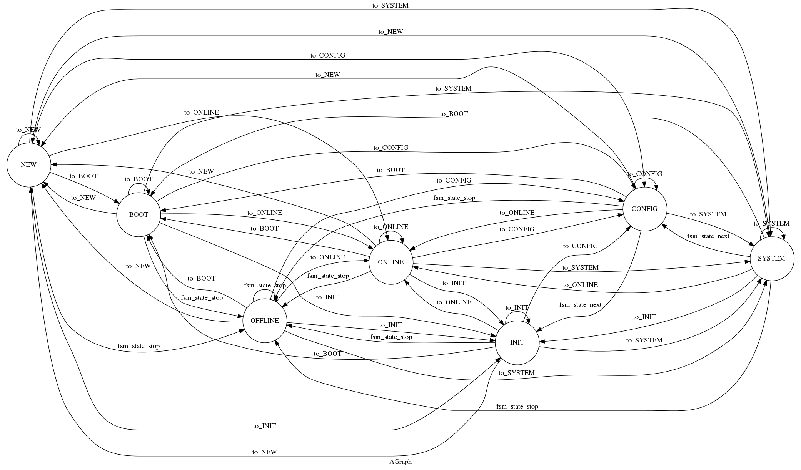
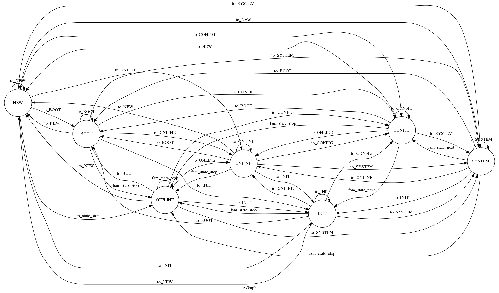

API¶
janitoo¶
janitoo is a mqtt protocol for Home Automation
Topics
/dhcp/lease/new /dhcp/lease/repair /dhcp/lease/lock /dhcp/lease/remove /dhcp/lease/release /dhcp/heartbeat# /dhcp/resolv/hadd /dhcp/resolv/name /dhcp/resolv/cmd_classes
/request/nodes/HADDController : controller should also listen to this topic. /request/broadcast : all controllers should listen to the broadcast topic. At now, it is only used by system values to discover network. /reply/nodes/HADDClient : when they receive a request, controller should send response here to the HADD client address /reply/broadcast/HADDClient : when they receive a request, controller should send response here to the HADD client address
/request/dhcp/heartbeat : the dhcp server should liste to this. It should send a reply with all known nodes and theirs states. /reply/dhcp/hearbeat/HADDClient : This this where the dhcp server should send the reply.
#To speak to the machines /machines/#HADD#
#To retrieve informatations on values /values/infos #To get updated data of values /values/data
#To retrieve informatations on nodes /nodes/infos #To get values of a node /nodes/values
#HADD#
/dhcp/#’, callback=self.mqtt_on_message)
Todo : add hadd or rename node_uuid in values. We must be abblet to contact the
From arduino to android
- arduino — mqtt —> mosquitto —– mqtt—–> janitoo_socketio ——- socket.io ——> android
- ^ | | +————– socket.io ——> webapp
raspberry - mqtt ———+
We will integrate the socketio and the webapp in a flask application. It should be a good idea to separate them, but this will add a lot of configuration problems :
- must use 2 ports : one for the socketio and one for the webapp -> 2 configurations options in clients and server.
- what about internet access : must use apache or nginx to add security : but need to update config on the fly or use some dns hack.
- ...
So ... a single webapp.
The listener/socket.io will handle the nodes and values received from info request.
mqtt¶
We should minimize the traffic between publishers and subscribers and the number of needed coonections.
Topics added to a mqtt client must be under the tre of the topic we subsribe to (ie to listen to topics /nodes and /broadcast, we must subscribe to /) But we will receive all the traffic of the queue
The broadcast : we should use a special mqtt_client and subscribe to /broadcast topic
The nodes and controllers : if we want to minimize traffic, nodes and crontroller should subscribe to /nodes/hadd. So all device need its own publisher.
to minimize connections, they should subscribe to /nodes. But in this case we will receive all the traffic for all nodes.
A simple (not simple with dhcp) is to listen to /nodes/add_ctrl/# :
- we can talk to the controller using /nodes/add_ctrl/# or /nodes/add_ctrl/0000/#
- for controller that need a dedicated topic, it can add it /nodes/add_ctrl/XXXX/#
It can
/broadcast/request /broadcast/reply
/nodes/HADD/request /nodes/HADD/reply
/nodes
/values
MQTT schema for janitoo
A Machine to Machine Home Automation protocol
- We should do a high level maaping of commands, ie :
- when associating devices using groups, we should allow a direct zwave association
PUB schema
/dhcp/heartbeat
/broadcast/request /broadcast/reply
/node/$(hadd)/request /node/$(hadd)/reply
/values/system/$(hadd)/ /values/config/$(hadd)/ /values/basic/$(hadd)/ /values/user/$(hadd)/
to do :
/node/$(hadd)/commands /node/$(hadd)/groups /node/$(hadd)/classes
/scenes /scenes/values /scenes/commands /scenes/groups
/nodes /nodes/values /nodes/commands /nodes/groups
/controllers /controlllers/values
/controlllers/commands /controlller/$(hadd)/values /controlller/$(hadd)/commands /controlller/$(hadd)/groups
/commands /values
/dhcp/leases /dhcp/lease/ack /dhcp/lease/new /dhcp/lease/release /dhcp/clients/$(uuid) /dhcp/ping/$(hadd) /dhcp/fail/$(hadd) /jmi/dchp/req /jmi/dchp/rep/$(uuid) $SYS/dhcp/
/cron/add /cron/destroy /cron/pause /cron/resume /cron/jobs/$(jobid)
- What machines are ?
- a controller
- a node
- the dhcp server
- What scenes are :
- a zwave scene
What nodes are : A node can handle one or more sensors, ...
- a zwave node
- a chacon device
- a temperature / ... DIY device using an arduino
- a raspy camera
What controllers are : A controller handle one or more nodes. It defines a network of nodes.
- a zwave controller
- a tellstick
- an arduino
- a slave raspberry
- What groups are :
- allow associations between device, without the need of a “core” - a zwave group - common group shared by arduino,
What jmi is : Janitoo Management Interface
Publications (~=notifications)
| /nodes |
|
| /controllers |
|
/
Softwares¶
Linux Mosquito broker : http://mosquitto.org/ litesql
paho : http://eclipse.org/paho/clients/python/, http://git.eclipse.org/c/paho/org.eclipse.paho.mqtt.python.git/tree/examples Subscribe to multiple topics : http://git.eclipse.org/c/paho/org.eclipse.paho.mqtt.python.git/tree/examples/sub-multiple-callback.py mqtclient as a class : http://git.eclipse.org/c/paho/org.eclipse.paho.mqtt.python.git/tree/examples/sub-class.py
json : https://github.com/bblanchon/ArduinoJson mqtt : http://knolleary.net/arduino-client-for-mqtt/
paho : http://eclipse.org/paho/clients/android/
windows, mac, iphone, ...
About JSON¶
This is surely the best choice to return information as it’s available from arduino to ... anything. We always return a status field. If an error occured we can add and error field. status (integer 16bits): use http status and defined new ones if really needed : http://www.w3.org/Protocols/rfc2616/rfc2616-sec10.html error (string 256bytes: an expicit error message. Of course, due to arduino huge of memory, we should limit the size of error field.
About ids¶
Controllers, nodes, ... should have an uiid. We can manage it in 2 ways : - auto assign uuid by controller - assigned by core, a sort of dhcp : will allow plug and play
Core¶
Manage a map of the network
Cron¶
We should deal with cron capables nodes (zwave, knx), ... It should be possible to add, destroy, pause or resume cron jobs A message is published by the cron server on /cron/jobs/$(jobid) when the event occurs.
Interacting over mqtt : jmi¶
It’a pub/sub mechanism so it’s not easy to lanch a command and get result (a request / reply model) : ie retrieve the leases of all machines.
- We can create a global mechanism :
- Client subscribe to /dhcp/all_leases
- when a client publish to /dhcp/jmi/leases the all list is published to /dhcp/all_leases.
- When client recevive the message, it do what it needs and then it disconnects.
What happen if 2 clients request at the same time : we will receive 2 messages (in 2 separate threads) so we need to lock, ... How to do that on an arduino ???
- So we need to use a machine to machine mechanism :
- the client genarate an uuid (it could use its hadd with caution) and subscribe to /jmi/$(had)/rep/$(uuid)
- it publish a message with a json and uuid to /jmi/$(had)/req/
- the $(had) machine do the job and publish a message with a result to /jmi/$(had)/rep/$(uuid)
- the client receive the response and unsubscribe to /jmi/$(had)/rep/$(uuid)
Openzwave over janitoo¶
A daemon that handles the libopenzwaave (not the api).
- the daemon starts
- it request an address for its controller :
- if it had one $(had) it make the request with it
- if not, it makes a full request sending classes, config_dir, user_dir, device_path
Command_classes¶
Capabilities of the nodes. See documentation in source.
Network¶
Powered by a robust state machine. Can be used with/by an DHCP server. A fail mode is available (this is the current mode :)) when no DHCP server is available.
Dynamic Home Configuration Protocol¶
From arduino to gamer computer
Limit the size of messages:
From arduino-mqtt :
Limitations
- Only Quality of Service (QOS) 0 messaging is supported.
- The maximum message size, including header, is 128 bytes by default. This is configurable.
- The keepalive interval is set to 15 seconds by default. This is configurable.
128 bytes is low, 256 is a better choice.
Addresses (=hadd : Home ADDress) : controllerpart(unsign 32bits):nodepart(unsign 32bits) for a controller : nodepart=0 the dhcp server has an address : 0:0
Client should always get the same address. We should manage a list of leases with history, ...
- Diagram :
- The dhcp server subscribe to /dhcp/lease/ack
- The dhcp server subscribe to /dhcp/lease/new
- The controller generate an uuid and subscribe to /dhcp/clients/$(uuid)
- The controller publish a message to /dchp/lease/new with this uuid and the previous address if it has one else it use unsign(-1):unsign(-1). It can add its name, location and timeout to update the dhcp server informations. It must add the classes it implements.
- The dhcp server receive the message and publish a message containing the address, the name, location, time and configuration to /dhcp/clients/$(uuid). It put the machine state to boot too.
- The controler receive the message and update its address, name, location and time.
- the controller unsubscribe to /dhcp/clients/$(uuid)
- the controller starts and publish a message to /dhcp/lease/ack
- the dchp server receive the message and update machine state to online
The process is the quite the same for the node except that if it had no address, it should use unsign(-1) as node part.
- Separate the dynamic hadd from configuration.
- Allow fixed HADDs
Diagram of configuration :
We will use a timeout to check the state of the lease. By default, it is defined to 24 hours for very long sleeping nodes and controllers. Controllers and nodes should always define their timeout.
The client should ping the server before its timeout by publishing a message to /dhcp/ping/$(hadd)
The server update its informations in database
*What to do when a client request a lease with an invalid $(had) ?* Send an error of type 400 : Bad Request
*On unmanaged exception* Send an error of type 500 : Internal server error
After a dhcp crash (no more leases database), we need to rebuild the database. Clients can help us.
We also need to add a timeout on the client : dhcp server not available, ...
When a controller or a node request an hadd, it can add configuration parameters. They will be saved in the dhcp database. The next time it will request a and address they will be sent again.
Machines states are :
boot : the node is about to boot. It has all the needed config and system values to do that. After that, it should send a online heartbeat. online : the node is working normally. offline : the node is shutdown. It has sent an offline hearbeat to say that. failed : the node has disappeared after being in online node. pending : dead :
At start, a lease is offline. When the machine is up, its lease’s state get online. If it do not send the ping before the timeout, it become pending. After 3 fails it becomes failed. After x monthes an offline machine become dead. We should be abble to remove dead nodes.
Peridocally, the server looks for timeouts. If one occurs, it publish a message to /dhcp/fail/$(hadd). Should also look for boot and destroy lease after a timeout.
The controller should listen to /dhcp/fail/$(hadd) for itself and all its nodes. And of course, it must do something to avoid this situation.
When a machine’s state, change a message is published on /dhcp/leases.
When a node failed, a message to /nodes/$(hadd) is published When a controller failed, a message to /controller/$(hadd) is published and a message for every nodes managed by him
When a controller shut down, il must release its lease and every leases used by its nodes. Maybe the dhcp can do this job. We also send a message to /dhcp/leases
- Retrieve the list of leases with state and classes
- Retrieve the list of nodes managed by a controller
- Remove a dead machine
- get/update/remove a machine configuration
Should we propagate state to nodes when a controller is pending, failed, dead, ...
We will use the : Fully qualified home name of the location : kitchen.home, aquarium.home, ... We need a location table to associate some parameters to
- we should manage different types of CONTROLLER:
- tiny : one node at a time, one command at a time, one config param at a time, .... (256 bytes at a time)
- computers : end a json with all config (illimited size message)
It should be cool to support fixed HADD, for debugging purpose in particular.
We should define a plage for dynamic/static hadds
Maybe we should update the protocol, to retrieve command classes and other parameters on first heartbeat, ...
Controllers and nodes may be updated by Config values (ie changinf the id of the i2cbus). The thread is capable of reloadinf itself using the reload method. But sometimes, we need to get multiple configuration parameters to boot the node or the controller.
The simplest way to do it is to send configuration in a json, in a single message. But what about raspberry ? When we receive the message, we store configuration in options (and maybe copy it in the configuration file) and reload the thread.
- Another way is to send configuration in multiple messages :
- on each configuration message (which need a reload) we store it in the setting files (or eeprom) and trigger a timeout to call the reload methode (ie 5 seconds)
- if another configuration messsage arrived with the timeout, we cancel the trigger, update the configuration file and trigger a new timeout.
- if we didn’t receive a new configuration message within the timeout, we reload the thread
The UI (web or else) need to discover the network : its nodes, values, ...
How can we achieve this : Asking the dhcp ?, asking directly to the nodes ?
To allow dhcp failover, we prefer to speak directly to nodes : using a broadcast address (-1,-1) because we don’t know their addresses.
We will use the values of type system to achieve this :
- node_info
- value_info
- config_info
The controller could respond for its node or let them do the job.
Clients (controller and/or nodes) should send information with delay of 0 to 2 seconds. Informations are send using json format. A message can contain one or more elements at a time.It should start after a delay between 0 to 2 seconds. When sending multipes messages, a delay from 0 to 2 seconds should be applied.
System values should not be sent by the controller are they names are fixed.
The dhcp server should also listen to broadcast : it can send a message with the number of nodes / values.
If we do not receive new informations after a delay of 30 seconds, we can consider the nodes/values as dicovered. Typically, a fulll network discovering can take from 1 minute to many.
About sleeping devices (the one which works with battery), the controller should announce them.
Graphes¶
 
